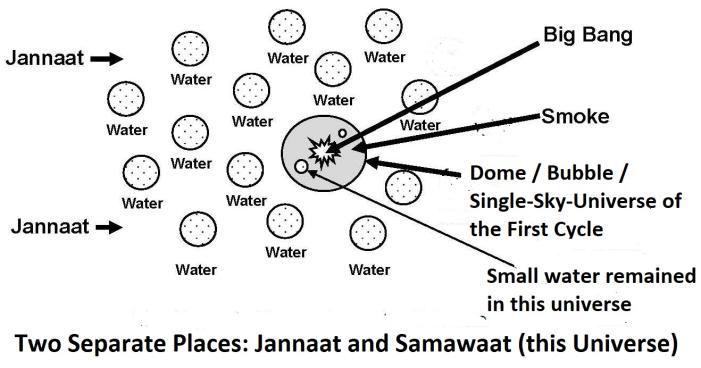

3c. Different Origin / Origin of Jannaat
3 গ. জান্নাতের ভিন্ন উৎস/উৎপত্তি
The Quran frequently mentions that the rivers of Jannaat flow from the underground water.
কুরআনে প্রায়শই উল্লেখ করা হয়েছে যে জান্নাতের নদীগুলি ভূগর্ভস্থ পানি থেকে প্রবাহিত হয়।
―…their portion is Jannaat; flow from underneath it the rivers.‖ [Al Quran 2:25]
--...তাদের অংশ জান্নাত; এর নিচ থেকে নদী প্রবাহিত হয়।'' [আল কুরআন 2:25]
―…For the righteous are Jannaat in nearness to their Lord; flow from underneath it the rivers.‖ [Al Quran 3:15]
--...কারণ নেককাররা তাদের পালনকর্তার সান্নিধ্যে জান্নাত; এর নিচ থেকে নদী প্রবাহিত হয়।'' [আল কুরআন 3:15]
―…and Jannaat; flow from underneath it the rivers—an eternal dwelling‖ [Al Quran 3:136]
--...এবং জান্নাত; এর নীচ থেকে নদী প্রবাহিত হয় - একটি চিরস্থায়ী বাসস্থান" [আল কুরআন 3:136]
―…verily, I will blot out from them their iniquities and admit them into Jannaat; flow from underneath it the rivers…‖ [Al Quran 3:195]
-...নিশ্চয়ই আমি তাদের পাপ মুছে দেবো এবং তাদেরকে জান্নাতে দাখিল করব; তার নীচ থেকে নদী প্রবাহিত হয়..." [আল কুরআন 3:195]
―On the other hand, for those who fear their Lord are Jannaat; flow from underneath it the rivers…‖ [Al Quran 3:198] ―Those are limits set by God; those who obey God and His Messenger will be admitted to Jannaat; flow from underneath it the rivers …‖ [Al Quran 4:13]
অপরদিকে, যারা তাদের রবকে ভয় করে তাদের জন্য জান্নাত; এর নিচ থেকে নদী প্রবাহিত হয়...'' [আল কুরআন 3:198] - এগুলো আল্লাহর নির্ধারিত সীমা; যারা ঈশ্বর ও তাঁর রাসূলের আনুগত্য করবে তারা জান্নাতে প্রবেশ করবে। তার নীচ থেকে নদী প্রবাহিত হয়..." [আল কুরআন 4:13]
In above verses, the Arabic word ―tajri min tahtihal anhar‖ is normally translated as ―with rivers flowing beneath‖. But the word for word translation is: ―flow from under it the rivers‖. It means that the rivers of Jannaat are not dependent on the supply of rainwater; water flow from underneath, like artesian well. The planets of Jannaat may have the cores of water—unlike the Earth that have core of molten iron. From the Hadith, we know that the poorest in Jannaat will be given a land, ten times bigger than the Earth. A land that is ten times bigger than the Earth should be a big planet. The Jupiter, the biggest planet of the Solar System, is ten times bigger than the Earth in volume. There will be billions of humans in the Jannaat. Each will be given one or more of such planets. We may try to imagine, how much water was needed to create billions of habitable planets. Following verse indicates that a huge quantity of water was created before the creation of this universe (Samawaat).
উপরের আয়াতগুলিতে, আরবি শব্দ "তাজরি মিন তাহতিহাল আনহার" সাধারণত "নিচ দিয়ে নদী প্রবাহিত" হিসাবে অনুবাদ করা হয়। কিন্তু শব্দ অনুবাদের শব্দটি হল: "এর নিচ থেকে প্রবাহিত নদীগুলি"। মানে জান্নাতের নদীগুলো বৃষ্টির পানি সরবরাহের ওপর নির্ভরশীল নয়; আর্টিসিয়ান কূপের মতো নিচ থেকে জল প্রবাহ। জান্নাতের গ্রহগুলিতে জলের কোর থাকতে পারে - পৃথিবীর বিপরীতে যেখানে গলিত লোহা রয়েছে। হাদিস থেকে জানা যায়, জান্নাতের সবচেয়ে দরিদ্র ব্যক্তিকে পৃথিবী থেকে দশগুণ বড় একটি জমি দেওয়া হবে। পৃথিবীর চেয়ে দশগুণ বড় একটি ভূমি একটি বড় গ্রহ হওয়া উচিত। সৌরজগতের সবচেয়ে বড় গ্রহ বৃহস্পতি আয়তনে পৃথিবীর চেয়ে দশগুণ বড়। জান্নাতে কোটি কোটি মানুষ থাকবে। প্রত্যেককে এমন এক বা একাধিক গ্রহ দেওয়া হবে। আমরা হয়তো কল্পনা করার চেষ্টা করি, বিলিয়ন বিলিয়ন বাসযোগ্য গ্রহ তৈরি করতে কতটা পানির প্রয়োজন ছিল। নিম্নলিখিত আয়াতটি নির্দেশ করে যে এই মহাবিশ্ব (সামাওয়াত) সৃষ্টির আগে বিপুল পরিমাণ পানির সৃষ্টি হয়েছিল।
―He it is Who created the ―Skies and Lands‖ (this universe) in six days, and His Arsh was over the waters.‖ [Al Quran 11:7] Holy Bible too talks about the water:
"তিনিই "আকাশ ও ভূমি" (এই মহাবিশ্ব) ছয় দিনে সৃষ্টি করেছেন এবং তাঁর আরশ ছিল জলের উপর।" [আল কুরআন 11:7] পবিত্র বাইবেলও জল সম্পর্কে বলে:
―In the beginning, when God created the Universe, the Earth was non-existent. The raging ocean that covered everything was engulfed in total darkness, and the Soul of God was hovering over the water.‖ [Genesis 1: (1–2), Holy Bible, GNB]
- শুরুতে, ঈশ্বর যখন মহাবিশ্ব সৃষ্টি করেছিলেন, তখন পৃথিবীর অস্তিত্ব ছিল না। উত্তাল সমুদ্র যা সমস্ত কিছুকে ঢেকে ফেলেছিল সম্পূর্ণ অন্ধকারে আচ্ছন্ন ছিল, এবং ঈশ্বরের আত্মা জলের উপরে ঘোরাফেরা করছিল।'' [জেনেসিস 1: (1-2), পবিত্র বাইবেল, জিএনবি]
It seems that the water was created for the Jannaat mainly. It was created before the Universe. So, the water might have been created through another Big Bang, or through some other Process. The water was floating in the Super Space like a huge ball of water. The following verses of Holy Bible indicate that the Big Bang that produced this universe occurred in the center of that water-ball.
মনে হয়, পানি মূলত জান্নাতের জন্যই তৈরি করা হয়েছে। এটি মহাবিশ্বের আগে সৃষ্টি হয়েছিল। সুতরাং, জল অন্য বিগ ব্যাং বা অন্য কোন প্রক্রিয়ার মাধ্যমে তৈরি হতে পারে। সুপার স্পেসে পানির বিশাল বলের মতো ভেসে যাচ্ছিল পানি। পবিত্র বাইবেলের নিম্নলিখিত আয়াতগুলি নির্দেশ করে যে এই মহাবিশ্বের উৎপন্ন বিগ ব্যাং সেই জল-বলের কেন্দ্রে ঘটেছিল।
―Then God commanded: Let there be dome to divide the water and to keep it in two separate places—and it was dome. So, God made a dome, and it separated the water under it from the water above it. He named the dome ―sky‖. Evening passed, and morning came that was the second day‖ – Genesis 1:6-8, Holy Bible, GNB
- অতঃপর ঈশ্বর আদেশ করলেন: জলকে ভাগ করার জন্য এবং দুটি পৃথক স্থানে রাখার জন্য গম্বুজ হোক - এবং এটি গম্বুজ ছিল। সুতরাং, ঈশ্বর একটি গম্বুজ তৈরি করলেন এবং এটি তার নীচের জলকে উপরের জল থেকে আলাদা করে দিল। তিনি গম্বুজটির নাম দিয়েছেন ‘আকাশ’। সন্ধ্যা পেরিয়ে গেল, এবং সকাল হল দ্বিতীয় দিন” – জেনেসিস 1:6-8, পবিত্র বাইবেল, GNB
The Big Bang produced smoke (hydrogen and helium mainly). The smoke produced a huge bubble in the center of the water-ball. In Holy Bible, the bubble is called dome, because a bubble and a dome look the same. So, the Big Bang (to produce this universe) occurred in the center of the water-ball. When a bubble is produced in the water, it rises on the surface of the water. But the enormous water-ball was floating in the Super Space—it had no up or down. Therefore, the bubble (dome) was expanding in the center of the water-ball in an explosive speed. The expanding bubble, full of smoke, has formed the Sky, as the above verses say: "He named the dome sky". In the verses of Holy Bible too, "Sky" means "Universe".
বিগ ব্যাং ধোঁয়া তৈরি করেছিল (প্রধানত হাইড্রোজেন এবং হিলিয়াম)। ধোঁয়াটি জল-বলের কেন্দ্রে একটি বিশাল বুদবুদ তৈরি করেছিল। পবিত্র বাইবেলে, বুদবুদটিকে গম্বুজ বলা হয়, কারণ একটি বুদবুদ এবং একটি গম্বুজ দেখতে একই রকম। সুতরাং, বিগ ব্যাং (এই মহাবিশ্ব তৈরি করতে) জল-বলের কেন্দ্রে ঘটেছে। পানিতে বুদবুদ তৈরি হলে তা পানির উপরিভাগে উঠে যায়। কিন্তু বিশাল জলের বল সুপার স্পেসে ভাসছিল-এর উপরে বা নিচে ছিল না। অতএব, বুদ্বুদ (গম্বুজ) বিস্ফোরক গতিতে জল-বলের কেন্দ্রে প্রসারিত হচ্ছিল। প্রসারিত বুদবুদ, ধোঁয়ায় পূর্ণ, আকাশ গঠন করেছে, যেমন উপরের আয়াতে বলা হয়েছে: "তিনি গম্বুজ আকাশের নাম দিয়েছেন"। পবিত্র বাইবেলের আয়াতেও "আকাশ" অর্থ "মহাবিশ্ব"।
FIGURE 3.7: Water and Big Bang

চিত্র 3_7 / Figure 3_7
চিত্র 3.7: জল এবং বিগ ব্যাং
চিত্র 3_7 / Figure 3_7
Eventually, due to the pressure of evolving gas, water-ball burst. The water gaining greater momentum drifted away from the smoke and scattered. The water has been used to create the objects of Jannaat.
অবশেষে, বিবর্তিত গ্যাসের চাপের কারণে, জল-বল ফেটে যায়। বৃহত্তর বেগ পেতে থাকা জল ধোঁয়া থেকে দূরে সরে যায় এবং ছড়িয়ে পড়ে। পানি ব্যবহার করা হয়েছে জান্নাতের বস্তু তৈরিতে।
FIGURE 3.8: Two Separate Places The verses talk about ―two separate places‖: ―Let there be dome to divide the water and to keep it in two separate places‖. These two separate places are two universes: the Samawaat (this universe) and the Jannaat (another universe). The smoke, produced in the bubble / dome, was used to create the single-sky-universe of the first cycle. A small quantity of water remained in this universe. Later, in the second cycle of the universe, the Earth has been provided with the water from this source. The vast oceans were filled up with water bearing asteroids.

চিত্র 3_8 / Figure 3_8
চিত্র 3.8: দুটি পৃথক স্থান আয়াতগুলি "দুটি পৃথক স্থান" সম্পর্কে কথা বলে: "জলকে ভাগ করার জন্য এবং দুটি পৃথক স্থানে রাখার জন্য গম্বুজ হোক"। এই দুটি পৃথক স্থান দুটি মহাবিশ্ব: সামওয়াত (এই মহাবিশ্ব) এবং জান্নাত (অন্য মহাবিশ্ব)। বুদবুদ/গম্বুজে উৎপন্ন ধোঁয়া প্রথম চক্রের একক-আকাশ-মহাবিশ্ব তৈরি করতে ব্যবহৃত হয়েছিল। এই মহাবিশ্বে অল্প পরিমাণ জল অবশিষ্ট ছিল। পরবর্তীতে, মহাবিশ্বের দ্বিতীয় চক্রে, এই উত্স থেকে পৃথিবীকে জল সরবরাহ করা হয়েছে। বিস্তীর্ণ মহাসাগরগুলি জল বহনকারী গ্রহাণু দ্বারা পরিপূর্ণ ছিল।
চিত্র 3_8 / Figure 3_8
3d.The Big Bounce
3d. The Big Bounce
It is likely that the expansion of the single-sky-universe (smoke) slowed down due to the pressure of water-ball. And, Allah infused gravitation force into the universe through the process of istawa (discussed in Chapter-1). Thus, the single-sky-universe began to contract. The contraction produced silicon and lighter elements in the smoke, with which some dust and asteroids (lands) could form. Eventually, the universe was re-initiated through a Big Bounce as a seven-sky-universe (Samawaat). The following verse is talking about the Big Bounce re- initiation of this universe:
সম্ভবত জল-বলের চাপের কারণে একক-আকাশ-মহাবিশ্বের (ধোঁয়া) সম্প্রসারণ ধীর হয়ে গেছে। এবং, আল্লাহ মহাবিশ্বে মহাকর্ষ বল প্রবাহিত করেছেন ইস্তাওয়া প্রক্রিয়ার মাধ্যমে (অধ্যায়-১ এ আলোচনা করা হয়েছে)। এভাবে একক-আকাশ-মহাবিশ্ব সংকুচিত হতে থাকে। সংকোচনের ফলে ধোঁয়ায় সিলিকন এবং হালকা উপাদান তৈরি হয়েছিল, যার সাথে কিছু ধুলো এবং গ্রহাণু (ভূমি) তৈরি হতে পারে। অবশেষে, মহাবিশ্ব একটি সাত-আকাশ-মহাবিশ্ব (সামাওয়াত) হিসাবে একটি বিগ বাউন্সের মাধ্যমে পুনরায় সূচনা করা হয়েছিল। নিম্নলিখিত শ্লোকটি এই মহাবিশ্বের বিগ বাউন্স পুনর্সূচনা সম্পর্কে কথা বলছে:
―Do not the unbelievers see that the Skies and Lands were joined together, before We clove them asunder (Big Bounce).‖ [Al Quran 21:30] The initial universe could have lands (dust and asteroids) if it started from a Fireball through a Big Bounce. From the Big Bounce, the universe could revive as a seven-sky-universe. The Skies are waves of space—one inside another; like the peels of onion. In the expanding Skies the matter could easily concentrate into the galaxies.
"অবিশ্বাসীরা কি দেখে না যে আকাশ ও ভূমি একত্রে মিলিত হয়েছিল, আমরা তাদের বিচ্ছিন্ন করার আগে (বিগ বাউন্স)।" [আল কুরআন 21:30] প্রাথমিক মহাবিশ্বের ভূমি (ধুলো এবং গ্রহাণু) থাকতে পারে যদি এটি একটি বিগ বাউন্সের মাধ্যমে আগুনের গোলা থেকে শুরু হয়। বিগ বাউন্স থেকে, মহাবিশ্ব সাত-আকাশ-মহাবিশ্ব হিসাবে পুনরুজ্জীবিত হতে পারে। আকাশগুলি হল মহাকাশের তরঙ্গ - একটির ভিতরে আরেকটি; পেঁয়াজের খোসার মত। প্রসারিত আকাশে বিষয়টি সহজেই ছায়াপথগুলিতে কেন্দ্রীভূত হতে পারে।
3e. Two completely separate Entities
3ই. দুটি সম্পূর্ণ আলাদা সত্তা
We know from the Hadith that there are seven Skies and eight Jannaat, and they are not connected to each other directly. None can go out from this universe (Samawaat) except through special paths (As Sirat):
আমরা হাদিস থেকে জানি যে সাতটি আসমান এবং আটটি জান্নাত রয়েছে এবং তারা সরাসরি একে অপরের সাথে সংযুক্ত নয়। বিশেষ পথ (আস সিরাত) ব্যতীত এই মহাবিশ্ব (সামাওয়াত) থেকে কেউ বের হতে পারে না:
―O ye assembly of jinns and men, if it be ye can pass beyond the boundary of Skies and Lands (this universe), pass ye! Not without authority shall ye be able to pass!‖ [Al Quran 55:33]
হে জিন ও মানুষের দল, যদি তোমরা আসমান ও জমিনের (এই মহাবিশ্বের) সীমানা অতিক্রম করতে পারো, তবে তোমরা অতিক্রম কর! কর্তৃত্ব ছাড়া তোমরা অতিক্রম করতে পারবে না!'' [আল কুরআন 55:33]
On the Day of Final Judgment, the people will move to the Jannaat through special paths, called As Sirat. Therefore, Jannaat and Samawaat are separate universes.
শেষ বিচারের দিন মানুষ জান্নাতে যাবে বিশেষ পথ, যাকে সিরাত বলা হয়। অতএব, জান্নাত ও সামাওয়াত পৃথক মহাবিশ্ব।
4. Location of Jannaat
4. জান্নাতের অবস্থান
The Jannaat exists at the outside of this universe. It is a separate universe altogether. ―Be quick in the race for forgiveness from your Lord and for a Jannaat, whose width is that of the Skies and Lands (this universe); prepared for the righteous…‖ [Al Quran 3:133]
জান্নাতের অস্তিত্ব এই মহাবিশ্বের বাইরে। এটি সম্পূর্ণরূপে একটি পৃথক মহাবিশ্ব। - তোমার রবের ক্ষমা এবং জান্নাতের জন্য দৌড়ে দ্রুত হও, যার প্রস্থ আকাশ ও জমিনের (এই মহাবিশ্ব); ধার্মিকদের জন্য প্রস্তুত...'' [আল কুরআন ৩:১৩৩]